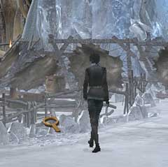
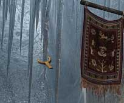

| 概要 | 地図 |
| 淡いヒント集 | ヒント集 | 的確なヒント集 |
| 攻略最短ルート |
| 場所選択に戻る |
ユコール族の村(前半)

目覚めたあなたは、まず外に出なければならない(当然服を着る必要もあるのだが、それは自動的にやってくれるので心配しなくてよい)。 外に出たら、画像の左側にいる小太りの男性に話しかけよう。彼は、ユコール族の村で村長をやっている人物である。彼に、「ハンスはどこにいるか?」、「ハンスのいる場所にはどうやって行ったらいいか?」を聞こう。 調べるのはさして難しくない。 
ハンスは祈祷師の所にいることが分かったあなたは、太鼓の音を頼りにここまで来るだろう。ところが、祈祷師のいる建物(洞穴)へ入るには、目の前のバチを止めなければならない。 どうやったら、いいだろうか? 教えてくれる人はいないはず。ここは祈祷師の家の下見が終わったと考え、村で”捜し物”をすることに専念して欲しい。

まず見つけて欲しいものは、革が張ってある場所にある「革ひも」である。画像のカーソルの位置を調べればよい。何に使うかは、いずれ分かるはずだ。 
次に見つけて欲しいものは、あなたが眠っていた家の入り口にあるツボである。この中に、「トナカイの角」が入っている。 先ほど手に入れた「革ひも」と「トナカイの角」をくっつけることで、「ストリングショット」ができる。しかし、革ひもはゴムのように伸びるのだろうか?

さて、先ほど作った「ストリングショット」で”何を打つか”が問題である。当然、人を狙ってはいけない。 太鼓を動かしている水車の真上を見て欲しい。旗のすぐそばのつらら(画像のアイコンの位置)がユラユラと動いているのが分かるはずだ。それめがけて、あなたの傍らに落ちている石をぶつけて欲しい。 つららが水車に落ち、太鼓は演奏をやめるだろう。 | 次へ >> |
|
| 場所選択に戻る |
| 概要 | 地図 |
| 淡いヒント集 | ヒント集 | 的確なヒント集 |
| 攻略最短ルート |
Syberia II
| 目次へ戻る | ページの上部へ |